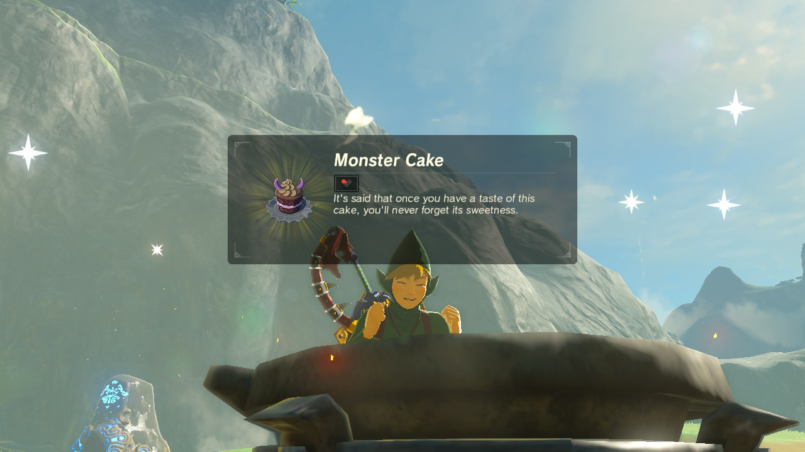
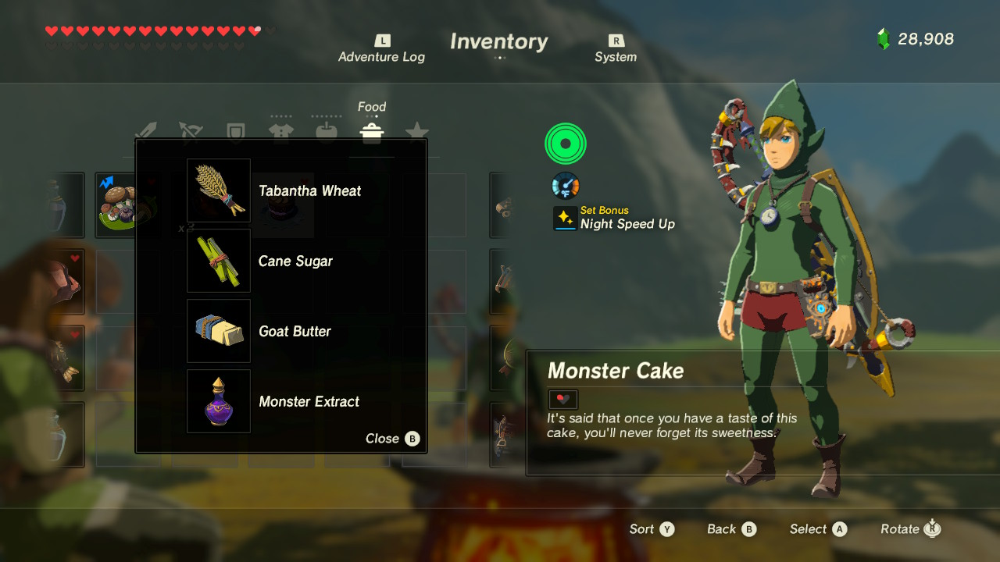

Monster Cake
Now onto my favorite recipe. The Monster Cake. Besides this recipe being actually edible, it is very fun to make.
It is said that once you have a taste of this cake you will never forget its sweetness.

Ingredients
For this recipe we will actually be using ingredients that you would normally use for a cake.
execpt that we will replace the milk with some monster extract.
And for this cake we will need:
- A handful of Tabantha Wheat
- Whata (water)
- Some Cane Sugar
- A stick of Goat Butter
- And TWO drops of monster extract. If you use more it could be dangerous to your soul. No matter how pure your soul is, there are things in this world that can and will corrupt it. This is one of them.

We will need to prepare our ingredients before we get to the actual cooking.
First you want to:
Recipe Instructions
- Grind the wheat kernels to obtain our flour.
- Squeeze the juice out of the cane sugar and simmer it down into a pot until you get a caramel like texture.
- Melt your stick of goat butter.
- Finally, get your monster extract ready.
Now, onto the assembly time:
- Add the melted butter to our flour and start mixing it by hand.
- While still mixing your flour, start adding some warm water until you get a nice and smooth texture.
- Add our previously simmered sugar cane juice to our mix.
- Lastly, add two drops of your monster extract. If we use more it will ruin our cake, and our life too, so be careful.
- Throw that boy into a pot and bake at 375°F for about 40 minutes.
- After the 40 minutes remove from the pot and decorate it. Make it look mischievous. It's a monster cake after all.
- Bon Appétit!
Take me back home